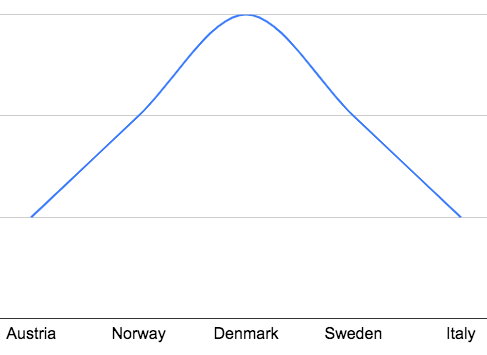
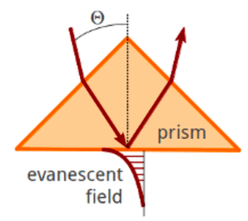
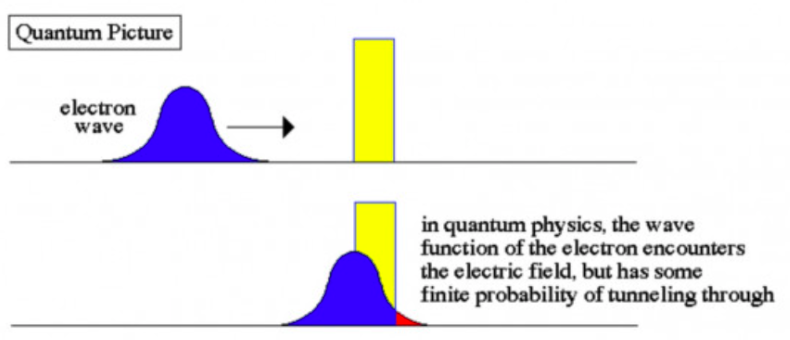
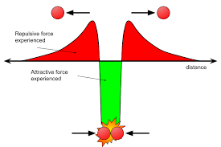

Quantum Tunneling - The Basics
How would you feel if you could walk through walls? Would you feel like a superhero, or would you not believe me at all? Well this is actually possible, but only if you are a particle at the quantum level. To answer how this works, we need to clear some things first. Look at the picture below.
(Quora)
The x axis represents where the subatomic particle (the electron in this case) can be present, while the square of the y-value determines what5 the chances are of the electron being present there in a specific location. For example, imagine a person who loves Europe, and says that her favorite country is Denmark, followed by the Scandinavian countries. So, if she goes on a trip to Europe (specifying that she will only go to one country), the probability wave of the country she goes to will look like this:

That is a wave function, a function that shows you the chances of an object being at a certain place.
How does the wave function relate to Quantum Tunneling?

Quantum tunneling is when a subatomic particle hits a barrier, but can still be found on the other side of the barrier. In the macroscopic world, that shouldn’t be possible. For example, a bullet cannot pass through a cement wall; if it wants to get past, it has to go from either side of the wall, or even above the wall. Similarly, a ball at the bottom of the hill cannot reach the other side with only a slight force applied to it in the forward direction. You will need to apply a lot of force so that it rolls up the hill and back down on the other side. However, in the quantum world, things work a little differently. Remember, the particles work as waves (you should read the Particle-Wave Duality article for more detail on this, but briefly, it means that when you try to identify its position, it behaves like a particle, but when you aren't looking, it acts like a wave), and waves don't work perfectly. For example, when you shine light on glass, you see the light bending (or refracting). If you shine the light at a specific angle (called the critical reflection angle), the light is supposed to completely reflect. However, a small light does pass through, known as evanescent light, as you can see in the image below.

Similarly, when the wave of an electron hits a barrier, instead of totally reflecting back, there is a chance that, if the barrier is thin enough, it can be found inside, or even on the other side of the barrier, like you can see in the image below.
(Interesting Engineering)
The peaks show how likely it is to find the electron there, and although it isn’t very likely to find the electron at the other side of the barrier, it is possible, and it happens a lot in real life.
Why is Quantum Tunneling important?
Quantum Tunnelling is very important to our lives, even if we don’t notice it. It helps us with multiple, essential features in normal life. An example is nuclear fusion. The Sun itself shines because of nuclear fusion, and without the Sun, we wouldn't be here (because it is the source of almost all of the energy we get). Here is what happens: Two hydrogen nuclei (basically just two protons) combine, and, due to this collision, one of the protons releases one positron and a neutrino, converting itself into a neutron. When another one of these newly formed nuclei collide with the other one, it forms the helium atom. However, there is just one problem with this scenario. Protons repel each other (because they are positively charged, and like charges repel), which makes it hard for them to even get near each other to combine. The reason they still manage to do this is Quantum Tunneling. Since the protons are also waves, and the temperature and pressure is very high at the core of the Sun (where this reaction takes place), they tend to come close to each other a lot. Very rarely though, these waves overlap just enough for the strong force to kick in, which, for the purposes of this article, is just a force that keeps protons together in a nucleus. Therefore, due to this overlapping with the help of Quantum Tunneling, this nuclear fusion can take place, releasing energy that makes life on the Earth possible. If not for this reaction, you wouldn’t be able to read this article right now; or even worse, you wouldn’t be alive right now. There are other uses of quantum tunneling as well, like DNA Mutations, but you get the idea.
How much time does quantum tunneling take?
An experiment conducted by researchers at the University of Toronto attempted to measure how long it takes for a particle to get to the other side of the barrier. They pointed rubidium atoms through a laser, and made sure that the barrier is also a laser. This allowed the barriers to be thin and the results to be precise. Choosing rubidium also was an important decision for the experiment, as the quantum spin (explanation) of rubidium is changed by lasers. So, if the rubidium atom showed up on the other side of the laser with its spin changed, that means that it has Quantum Tunneled. The researchers measured time to be 0.61 milliseconds, which is extremely small according to our macroscopic numbers, but is comparatively big on the scale of high speed particles.
Image Credits: RES-TEC, Abyss - UOregon, Mr. Toogood Physics
References
- “How the Sun works: Fusion and Quantum Tunneling.” Youtube, uploaded by minutephysics, 26 July 2011, https://www.youtube.com/watch?v=gS1dpowPlE8.
- ““Walk through walls” hack in real life?! — Quantum Tunneling explained || Breakthrough Jr Challenge.” Youtube, uploaded by Maryam Tsegaye, https://www.youtube.com/watch?v=H_5Nfeje8rI.
- “Quantum Tunneling.” Byjus, https://byjus.com/physics/quantum-tunnelling/.
- “Quantum Tunneling.” Youtube, uploaded by Physics Videos by Eugene Khutoryansky, 29 February 2016, https://www.youtube.com/watch?v=RF7dDt3tVmI.
- “Quantum Tunnelling: When the Impossible Becomes Possible | Physics Explained for Beginners.” Youtube, uploaded by Parth G, 4 February 2020, https://www.youtube.com/watch?v=sfHZyoUXvZY.